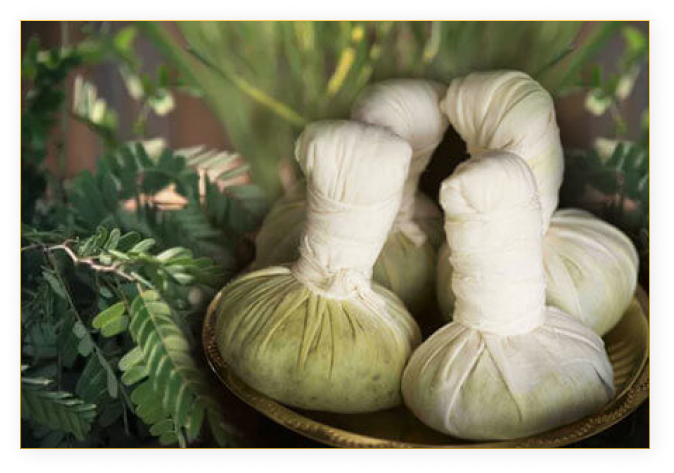
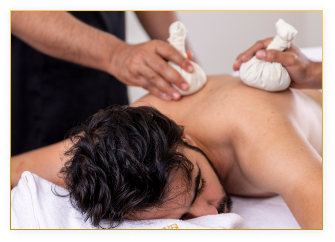

Elakkizhi or Pathrapotala Sweda, is a time-tested Ayurvedic sudation therapy using various medicinal herbs. It induces perspiration within the affected area, which prompts the skin to eliminate wastes and toxins accumulated and is thus used to tackle joint pain and swelling, muscle cramps, aches, stress, neuralgia, low back pain, spondylosis, and arthritis.
These therapies can be offered in different combinations according to the physician's direction. Each of these combinations has a curative and rejuvenative effect after being undergone for definite periods and repeated at definite intervals.
Elakizhi or kizhi massage in Ayurveda is said to be highly rejuvenating. The doctor performing the massage uses leaves fried in herbal oils. These leaves are then tied to a linen cloth forming a pouch. The massage process is carried out with these pouches.
Apart from these ingredients, the process may also involve medicated oils such as Murivenna oil, karpooradi oil, sahacharadi oil, or dhanwantharam thailam. The choice of oil may be subject to the particular health concerns that a person is dealing with.
To commence the process, the practitioner will apply the suited herbal oil over the entire body. This will be followed by a massage using heated boluses. This can help induce profuse sudation. This can help with the detoxification process.
The working concept of this process is to let the body sweat more and more through a series of soft massages over the affected area. Eventually, this sweating may be able to relieve the person of the toxins that might have accumulated over a long period of time.
Also, the leaves used for the process are said to have positive, healing effects on the body, helping it with nourishment and easing down any swellings or inflammatory conditions.